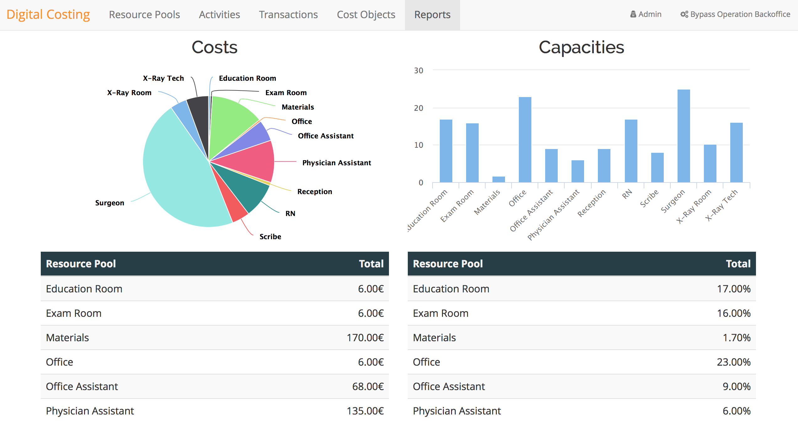

Costing and cost analysis should be offered as a service instead of as an investment in a onetime project. Our solution enables organizations to access accurate costing methodologies because costs are diluted over time and the tools needed to perform this cost analysis are also offered as a service. It gives organizations the ability to do onemand cost analysis so that they can constantly evaluate the flow of costs as well as take measures to improve their cost efficiency.
Our solution is a cloud-based costing service that uses TDABC and the concept of Business Process Cost Templates to reduce the costs associated with cost analysis.
Benefits
Our main objective is to reduce the costs associated with cost analysis so that all organizations can reach the accurate costing methodologies needed to assess an organization’s cost efficiency and performance. In order to accomplish that, our solution provides the following benefits:
- Accurate: Real costs assigned precisely to your products and services;
- Affordable: Efficient and accurate costing methodologies are out of reach for most SMEs, since these methodologies usually involve hiring expensive consulting firms;
- Easy to use: Do it yourself. No need for expensive consulting firms;
- Analytics: Collect automatically indicators from your business in a appealing way;
- Scientific: Based on years of scientific research with pratical implementations on dozens of organizations;
- Integration: Extract information from your ERP and import it to the cloud-based costing solution.